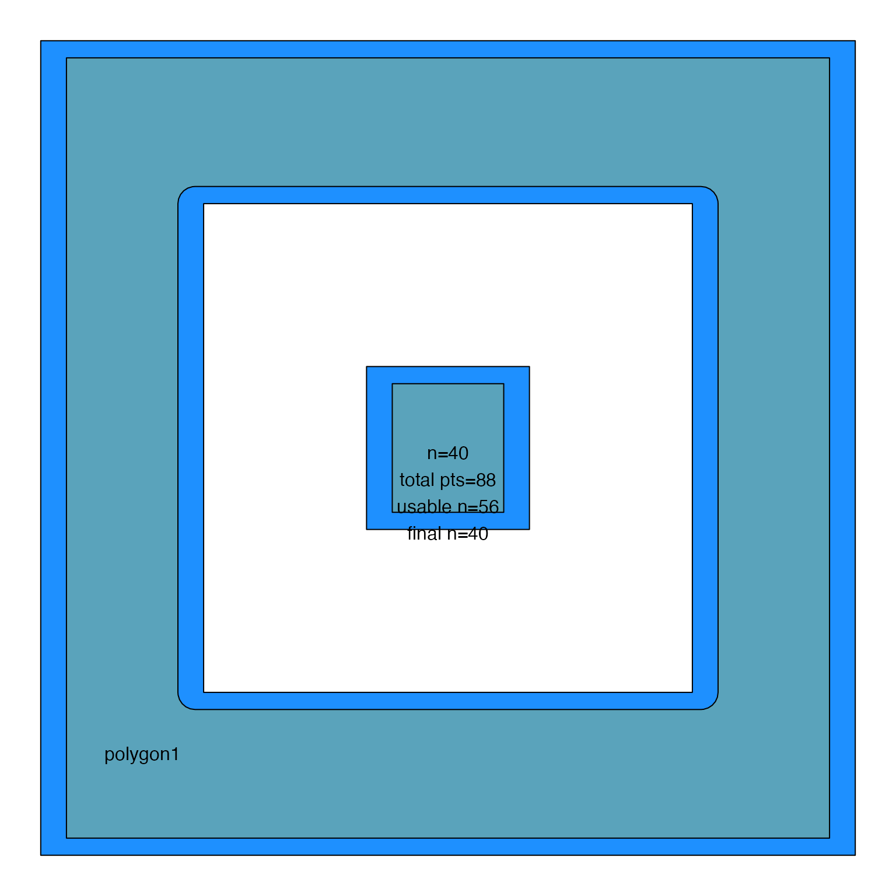
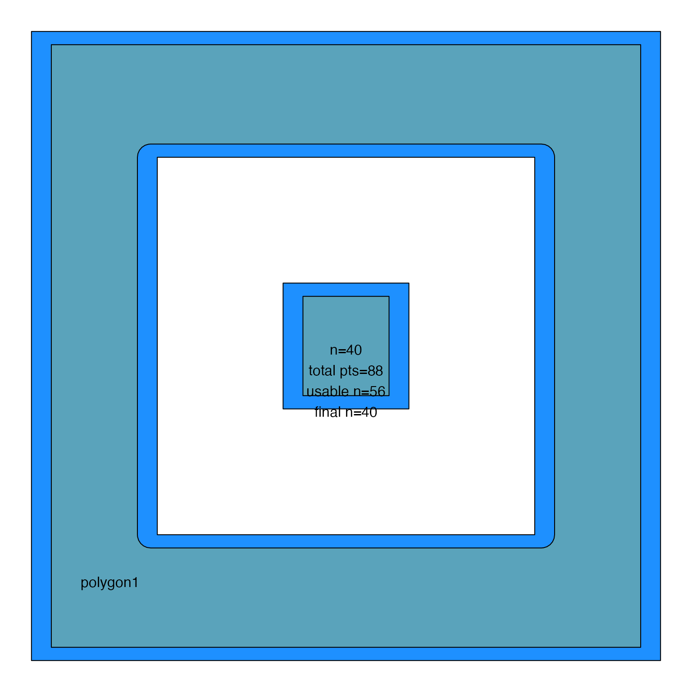
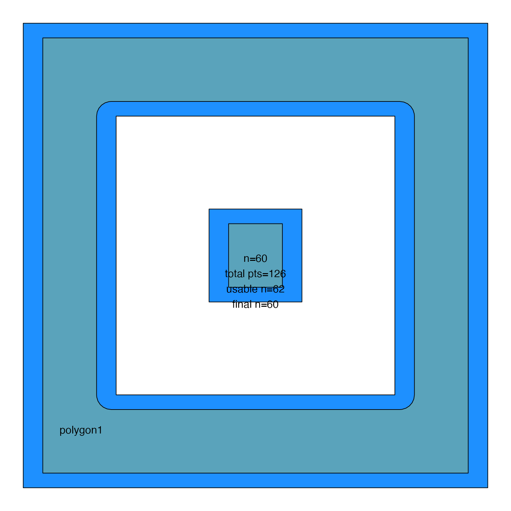
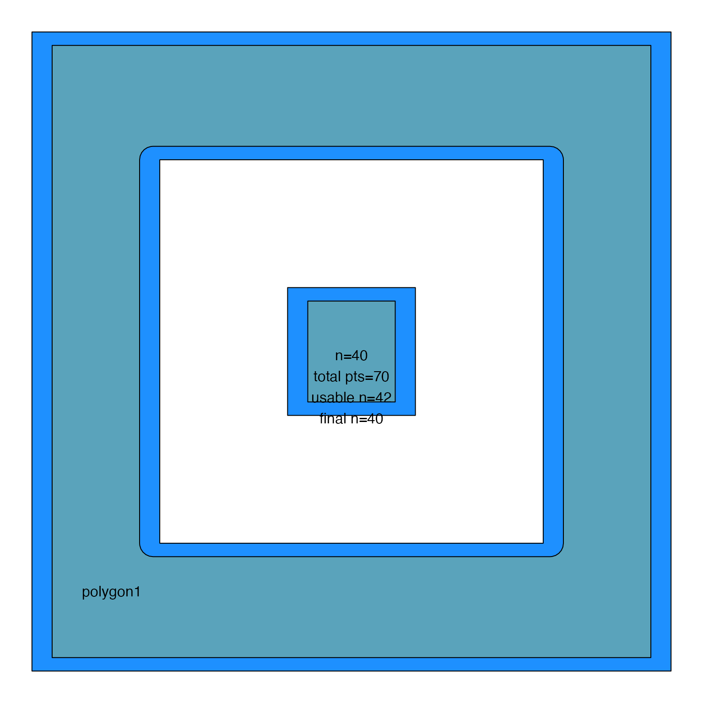
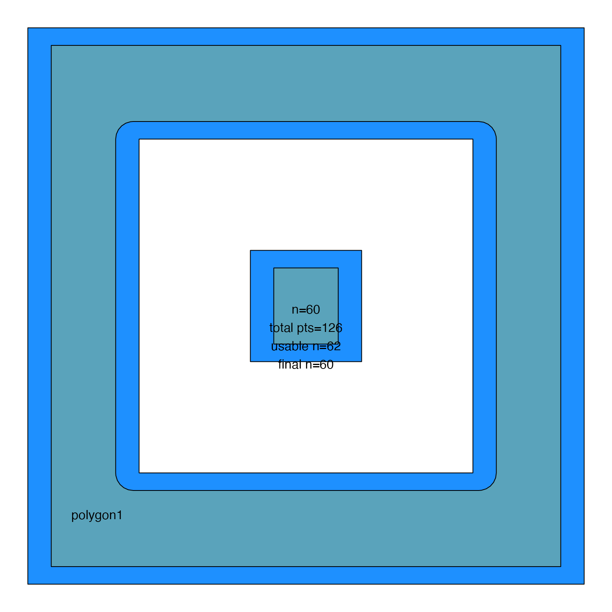
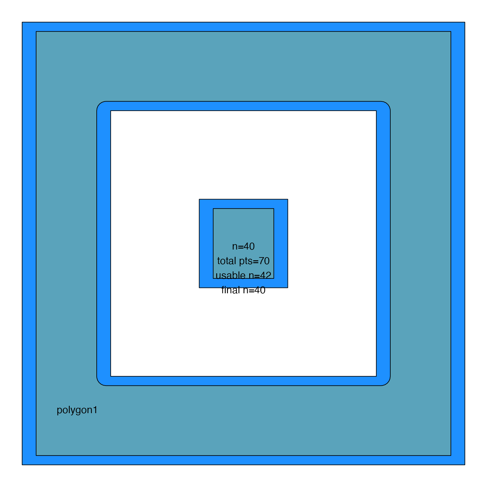

Sample points within JamPolygon
Arguments
- jp
JamPolygon- n
integernumber of points required- xyratio
numericadjustment for the x/y ratio, numbers larger than 1 make the x-axis spacing larger than the y-axis spacing.- spread
logical(defaultFALSE) when more thennpoints are defined than the target number of points,spreadindicates whether the subset ofnpoints returned is defined using the firstnpoints (spread=FALSE) or an even spread from start to end (spread=TRUE),spread=TRUEcan produce unusual distributions, with potential improvementwhen filling an irregular polygon.spread=FALSEproduces more "regular" placement of labels, also without gaps.
- n_ratio
numericratio which must be1or higher, default 1, how many total valid points should be defined before choosing a subset of points to use.n_ratio=1- definesnpoints as closely as possible.n_ratio=2- defines twice the points, then takes a subset to use, based upon argumentspread. It may be beneficial when trying to fill an irregularly shaped polygon to use a highern_ratio, thereby forcing the discovery of many more possible points. That said, the subset of points may not be "ideally" distributed relative to other labels, and relative to the polygon shape.
- pattern
characterstring indicating how to array the points:"offset"(default) uses a rectangular grid where alternating points on each row are offset slightly on the y-axis."columns"uses a rectangular grid with points on each row that share the same y-axis value. Essentially the same as "offset" using offset=0.
- buffer
numericoptional buffer used to adjust thejppolygon size overall, where negative values will slightly shrink the polygon border. Points are sampled after this adjustment.- byCols
characterpassed tojamba::mixedSortDF()to determine how to sort the resulting coordinates. DefaultbyCols=c("-y", "x")sorts top-to-bottom, then left-to-right.- algorithm
characterstring, default "split""split": newer approach that starts with large step increases inn, then subdivides between failure/success to find the optimal finaln. During testing it was substantially faster and more accurate than the previous algorithm"seq"."seq": attempts a linear sequence ofnvalues with gradual increases. It may be slightly more accurate, always finding the lowest value, at the expense of brute force speed.
- do_plot
logicalindicating whether to create a plot to illustrate the process.- n_seq
numeric, default NULL, used to provide a custom sequence ofnvalues to attempt, used for internal testing but may be useful to provide exact values determined by an external approach.- verbose
logicalindicating whether to print verbose output.- ...
additional arguments are ignored.
See also
Other JamPolygon:
JamPolygon-class,
[,JamPolygon,ANY,ANY,ANY-method,
add_orientation_JamPolygon(),
area_JamPolygon(),
bbox_JamPolygon(),
buffer_JamPolygon(),
check_JamPolygon(),
eulerr_to_JamPolygon(),
farthest_point_JamPolygon(),
find_venn_overlaps_JamPolygon(),
has_point_in_JamPolygon(),
intersect_JamPolygon(),
label_fill_JamPolygon(),
label_outside_JamPolygon(),
label_segment_JamPolygon(),
labelr_JamPolygon(),
minus_JamPolygon(),
nearest_point_JamPolygon(),
nudge_JamPolygon(),
plot.JamPolygon(),
point_in_JamPolygon(),
polyclip_to_JamPolygon(),
polygon_circles(),
polygon_ellipses(),
split_JamPolygon(),
union_JamPolygon(),
update_JamPolygon()
Examples
df3 <- data.frame(name=c("polygon1", "polygon2"),
label=c("polygon1", "polygon2"),
x=I(list(
list(c(1, 6, 6, 1),
c(2, 5, 5, 2),
c(3, 4, 4, 3)),
list(#c(11, 16, 16, 11),
c(12, 15, 15, 12),
c(13, 14, 14, 13))
)),
y=I(list(
list(c(1, 1, 6, 6),
c(2, 2, 5, 5),
c(3, 3, 4, 4)),
list(#c(1, 1, 6, 6),
c(2, 2, 5, 5),
c(3, 3, 4, 4))
)),
fill=c("gold", "firebrick"))
jp3 <- new("JamPolygon", polygons=df3);
sample_JamPolygon(jp3[1,], n=40, do_plot=TRUE)
 sample_JamPolygon(jp3[1,], n=40, do_plot=TRUE, spread=TRUE)

sample_JamPolygon(jp3[1,], n=40, do_plot=TRUE, algorithm="seq")
sample_JamPolygon(jp3[1,], n=40, do_plot=TRUE, spread=TRUE)

sample_JamPolygon(jp3[1,], n=40, do_plot=TRUE, algorithm="seq")
 sample_JamPolygon(jp3[1,], n=40, do_plot=TRUE, algorithm="seq", spread=TRUE)
sample_JamPolygon(jp3[1,], n=40, do_plot=TRUE, algorithm="seq", spread=TRUE)
 sample_JamPolygon(jp3[1,], n=60, buffer=-0.3, spread=FALSE, do_plot=TRUE, xyratio=0.6)
sample_JamPolygon(jp3[1,], n=60, buffer=-0.3, spread=FALSE, do_plot=TRUE, xyratio=0.6)
 sample_JamPolygon(jp3[1,], n=60, buffer=-0.3, spread=FALSE, do_plot=TRUE, xyratio=0.6, algorithm="seq")

sample_JamPolygon(jp3[1,], n=40, do_plot=TRUE, pattern="columns")

sample_JamPolygon(jp3[1,], n=60, buffer=-0.3, spread=FALSE, do_plot=TRUE, xyratio=0.6, algorithm="seq")

sample_JamPolygon(jp3[1,], n=40, do_plot=TRUE, pattern="columns")
